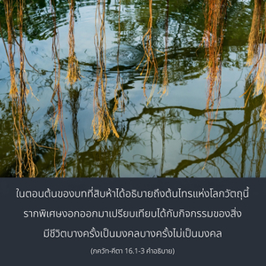
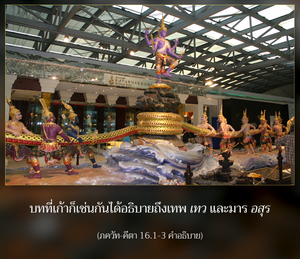
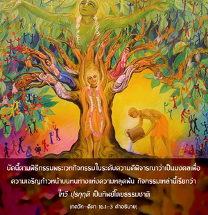
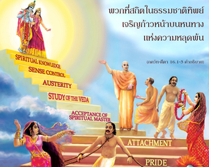
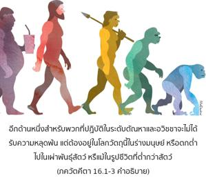
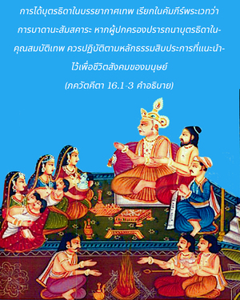
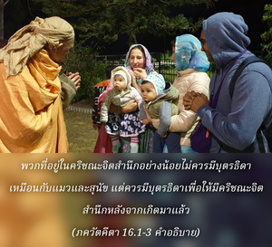
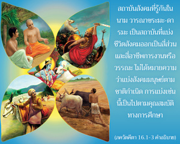

บุคลิกภาพสูงสุดแห่งพระเจ้าทรงตรัสว่า โดยปราศจากความกลัว ทำให้ความเป็นอยู่ของตนบริสุทธิ์ พัฒนาความรู้ทิพย์ ให้ทาน ควบคุมตนเอง ปฏิบัติพิธีบูชา ศึกษาคัมภีร์พระเวท สมถะ เรียบง่าย ไม่เบียดเบียน มีสัจจะ ปราศจากความโกรธ เสียสละ สงบ ไม่ชอบจับผิดเมตตาต่อมวลชีวิต ปราศจากความโลภ สุภาพถ่อมตน แน่วแน่มั่นคง กระปรี้กระเปร่า ให้อภัย อดทน สะอาด ปราศจากความอิจฉาริษยา และไม่ปรารถนาคำสรรเสริญ โอ้ โอรสแห่ง ภรต คุณสมบัติทิพย์เหล่านี้เป็นคุณสมบัติของบรรดาเทพผู้มีธรรมชาติทิพย์








ในตอนต้นของบทที่สิบห้าได้อธิบายถึงต้นไทรแห่งโลกวัตถุนี้ รากพิเศษงอกออกมาเปรียบเทียบได้กับกิจกรรมของสิ่งมีชีวิต บางครั้งเป็นมงคล บางครั้งไม่เป็นมงคล บทที่เก้าก็เช่นกันได้อธิบายถึงเทพ เทว และมาร อสุร บัดนี้ตามพิธีกรรมพระเวทกิจกรรมในระดับความดีพิจารณาว่าเป็นมงคลเพื่อความเจริญก้าวหน้าบนหนทางแห่งความหลุดพ้น กิจกรรมเหล่านี้เรียกว่า ไทวี ปฺรกฺฤติ เป็นทิพย์โดยธรรมชาติพวกที่สถิตในธรรมชาติทิพย์เจริญก้าวหน้าบนหนทางแห่งความหลุดพ้น อีกด้านหนึ่งสำหรับพวกที่ปฏิบัติในระดับตัณหาและอวิชชา จะไม่ได้รับความหลุดพ้น แต่ต้องอยู่ในโลกวัตถุนี้ในร่างมนุษย์ หรือตกต่ำไปในเผ่าพันธุ์สัตว์ หรือแม้ในรูปชีวิตที่ต่ำกว่าสัตว์ บทที่สิบหกนี้องค์ภควานฺทรงอธิบายทั้งธรรมชาติทิพย์ และคุณสมบัติที่ควบคู่กันไป และธรรมชาติมารพร้อมทั้งคุณสมบัติที่ควบคู่กันไป และทรงอธิบายถึงประโยชน์ และโทษของคุณสมบัติเหล่านี้
คำว่า อภิชาตสฺย มีความสำคัญมากสัมพันธ์กับผู้ที่เกิดมามีคุณสมบัติทิพย์ หรือแนวโน้มไปในทางเทพ การได้บุตรธิดาในบรรยากาศเทพเรียกในคัมภีร์พระเวทว่า ครฺภาธาน-สํสฺการ หากผู้ปกครองปรารถนาบุตรธิดาในคุณสมบัติเทพควรปฏิบัติตามหลักธรรมสิบประการที่แนะนำไว้ เพื่อชีวิตสังคมของมนุษย์ ใน ภควัท-คีตา เราได้ศึกษาแล้วเช่นกันว่า ชีวิตเพศสัมพันธ์เพื่อได้บุตรธิดาที่ดีนั่นคือองค์กฺฤษฺณเอง ชีวิตเพศสัมพันธ์ไม่ผิดหากใช้วิธีการในกฺฤษฺณจิตสำนึก พวกที่อยู่ในกฺฤษฺณจิตสำนึกอย่างน้อยไม่ควรมีบุตรธิดาเหมือนกับแมวและสุนัข แต่ควรมีบุตรธิดาเพื่อให้มีกฺฤษฺณจิตสำนึกหลังจากเกิดมาแล้ว เช่นนี้จะเป็นประโยชน์สำหรับเด็กๆ ที่เกิดกับบิดาและมารดาที่ซึมซาบอยู่ในกฺฤษฺณจิตสำนึก
สถาบันสังคมที่รู้กันในนาม วรฺณาศฺรม-ธรฺม เป็นสถาบันที่แบ่งชีวิตสังคมออกเป็นสี่ส่วน และสี่อาชีพการงาน หรือวรรณะไม่ได้หมายความว่าแบ่งสังคมมนุษย์ตามชาติกำเนิด การแบ่งเช่นนี้เป็นไปตามคุณสมบัติทางการศึกษา เพื่อรักษาความสงบ และความเจริญรุ่งเรืองในสังคม คุณสมบัติที่กล่าว ณ ที่นี้เป็นคุณสมบัติทิพย์ เพื่อทำให้บุคคลเจริญก้าวหน้าในการเข้าใจวิถีทิพย์ เพื่อที่จะได้เป็นอิสระจากโลกวัตถุ
ในสถาบัน วรฺณาศฺรม สนฺนฺยาสี หรือบุคคลในชีวิตสละโลกพิจารณาว่าเป็นผู้นำ หรือเป็นพระอาจารย์ของทุกๆ ระดับชั้น ในสังคม พฺราหฺมณ พิจารณาว่าเป็นพระอาจารย์ทิพย์ของระดับในสังคม เช่น กฺษตฺริย, ไวศฺย และ ศูทฺร แต่ สนฺนฺยาสี ผู้อยู่สูงสุดของสถาบันพิจารณาว่าเป็นพระอาจารย์ทิพย์ของ พฺราหฺมณ ด้วย เพราะคุณสมบัติแรกของ สนฺนฺยาสี คือ ปราศจากความกลัว สนฺนฺยาสี ต้องอยู่คนเดียวโดยไม่มีผู้อุปถัมภ์ หรือไม่รับประกันว่าจะได้รับการอุปถัมภ์ ท่านต้องพึ่งพระเมตตาของบุคลิกภาพสูงสุดแห่งพระเจ้าเท่านั้น หากคิดว่า “หลังจากตัดความสัมพันธ์จากสังคมไปแล้วใครจะปกป้องข้า” หากเป็นเช่นนี้ก็ไม่ควรรับเอาชีวิตสละโลกมาปฏิบัติ เราต้องมีความมั่นใจอย่างแน่วแน่ว่าองค์กฺฤษฺณ หรือบุคลิกภาพสูงสุดแห่งพระเจ้าในรูป ปรมาตฺมา ผู้ประทับอยู่ในหัวใจของทุกๆ คนทรงเห็นทุกสิ่งทุกอย่าง และพระองค์ทรงทราบเสมอว่าเราตั้งใจทำอะไรอยู่ ดังนั้น เราต้องมีความมั่นใจอย่างแน่วแน่ว่าองค์กฺฤษฺณในรูปของ ปรมาตฺมา จะดูแลดวงวิญญาณที่ศิโรราบต่อพระองค์ “ข้าจะไม่มีวันอยู่คนเดียว” เราควรคิดว่า “ถึงแม้อยู่ในเขตป่าที่มืดมิดที่สุด ข้าก็จะมีองค์กฺฤษฺณอยู่เคียงข้าง และพระองค์จะให้การปกป้องคุ้มครองอยู่ตลอดเวลา” ความมั่นใจเช่นนี้เรียกว่า อภยมฺ ปราศจากความกลัว ระดับจิตเช่นนี้จำเป็นสำหรับบุคคลผู้รับเอาชีวิตสละโลกมาปฏิบัติ
จากนั้นต้องทำให้ความเป็นอยู่ของตนเองให้บริสุทธิ์ มีกฎเกณฑ์มากมายที่ต้องปฏิบัติตามในชีวิตสละโลก สิ่งสำคัญที่สุดสำหรับ สนฺนฺยาสี คือ มีข้อห้ามอย่างเคร่งครัดในการมีความสัมพันธ์ใกล้ชิดกับสตรี ห้ามแม้แต่จะพูดกับสตรีในที่ลับ องค์ไจตนฺย ทรงเป็นสนฺนฺยาสี ที่ดีเลิศ ขณะทรงอยู่ที่ปุรี เหล่าสาวกสตรีไม่สามารถแม้แต่มาแสดงความเคารพใกล้พระองค์ พวกนางได้รับคำแนะนำให้ไปก้มลงกราบห่างๆ เช่นนี้ไม่ได้แสดงว่ารังเกียจชนชั้นสตรีแต่เป็นข้อกำหนดที่มีไว้สำหรับสนฺนฺยาสี ไม่ให้มีความสัมพันธ์ใกล้ชิดกับสตรี เราต้องปฏิบัติตามกฎเกณฑ์ของระดับชีวิตโดยเฉพาะของตนเพื่อให้ความเป็นอยู่บริสุทธิ์ขึ้น สำหรับ สนฺนฺยาสี ความสัมพันธ์ใกล้ชิดกับสตรี และความเป็นเจ้าของทรัพย์สมบัติเพื่อสนองประสาทสัมผัสได้ถูกห้ามไว้อย่างเคร่งครัด องค์ไจตนฺย เองทรงเป็น สนฺนฺยาสี ที่ดีเลิศ เราได้เรียนรู้จากชีวิตของพระองค์ว่า ทรงมีความเข้มงวดมากเกี่ยวกับสตรี ถึงแม้พิจารณาว่าเป็นอวตารแห่งองค์ภควานฺที่มีความโอบอ้อมอารีย์ และมีเสรีมากที่สุดด้วยการยอมรับพันธวิญญาณผู้ตกต่ำที่สุด พระองค์ก็ยังทรงปฏิบัติตามกฎเกณฑ์ของชีวิต สนฺนฺยาส อย่างเคร่งครัด ในเรื่องที่เกี่ยวกับการคบหาสมาคมกับสตรีมีครั้งหนึ่ง หนึ่งในผู้ที่ใกล้ชิดส่วนพระองค์ชื่อ โฉฏ หริทาส ซึ่งอยู่ใกล้ชิดกับพระองค์ร่วมกับสาวกรูปอื่นๆ ไปมองหญิงสาวอย่างมีตัณหา องค์ไจตนฺย ผู้ทรงมีความเคร่งครัดมากจึงปฏิเสธ โฉฏ หริทาส ไม่ให้มาอยู่ในกลุ่มผู้ใกล้ชิดส่วนพระองค์ โดยตรัสว่า “สำหรับ สนฺนฺยาสี หรือผู้ใดที่ปรารถนาจะออกไปจากเงื้อมมือของธรรมชาติวัตถุ และพยายามพัฒนาตนเองไปสู่ธรรมชาติทิพย์ เพื่อกลับคืนสู่เหย้าคืนสู่องค์ภควานฺ หากมองไปเพื่อเป็นเจ้าของวัตถุ และมองไปที่ผู้หญิงเพื่อสนองประสาทสัมผัส แม้ยังไม่ได้รื่นรมณ์แต่มองไปด้วยแนวโน้มเช่นนี้ควรถูกประณาม และไปฆ่าตัวตายเสียยังดีกว่า ก่อนที่จะมีประสบการณ์กับความปรารถนาที่ผิดๆ เช่นนี้” นี่คือวิธีปฏิบัติเพื่อความบริสุทธิ์
รายการต่อไปคือ ชฺญาน-โยค-วฺยวสฺถิติ ปฏิบัติในการพัฒนาความรู้ชีวิตสนฺนฺยาสี หมายไว้เพื่อแจกจ่ายความรู้แก่คฤหัสถ์ และบุคคลอื่นๆ ผู้ที่ลืมชีวิตอันแท้จริงแห่งความเจริญก้าวหน้าในวิถีทิพย์ของตน สนฺนฺยาสี ควรภิกขาจารไปตามบ้านเพื่อการดำรงชีพ เช่นนี้ไม่ได้หมายความว่าเป็นขอทาน การถ่อมตนก็เป็นอีกคุณสมบัติหนึ่งสำหรับผู้สถิตในวิถีทิพย์ และด้วยความถ่อมตนแท้ๆที่ สนฺนฺยาสี ภิกขาจารจากบ้านหนึ่งไปยังอีกบ้านหนึ่ง ไม่ใช่เพื่อไปขอทานโดยตรง แต่เพื่อไปพบและปลุกพวกคฤหัสถ์ให้ตื่นมาอยู่ในกฺฤษฺณจิตสำนึก นี่คือหน้าที่ของ สนฺนฺยาสี หากท่านเจริญก้าวหน้าจริง และได้รับคำสั่งจากพระอาจารย์ทิพย์ ท่านควรสอนกฺฤษฺณจิตสำนึกด้วยตรรกวิทยาและความเข้าใจ หากยังไม่เจริญก้าวหน้าพอก็ไม่ควรรับเอาชีวิตสละโลกมาปฏิบัติโดยไม่มีความรู้เพียงพอ ท่านควรสดับฟังจากพระอาจารย์ทิพย์ผู้เชื่อถือได้เพื่อพัฒนาความรู้โดยสมบูรณ์ สนฺนฺยาสี ผู้รับเอาชีวิตสละโลกมาปฏิบัติจะต้องไม่มีความกลัว สตฺตฺว-สํศุทฺธิ (มีความบริสุทธิ์) และ ชฺญาน-โยค (มีความรู้)
คำต่อไปคือการให้ทาน หมายไว้สำหรับคฤหัสถ์ คฤหัสถ์ควรหาเงินเลี้ยงชีพด้วยความซื่อสัตย์สุจริต และให้ห้าสิบเปอร์เซ็นต์ของรายได้เพื่อเผยแพร่กฺฤษฺณจิตสำนึกไปทั่วโลก ดังนั้น คฤหัสถ์ควรให้ทานแก่สถาบันสังคมที่ปฏิบัติเช่นนี้ การให้ทานควรให้แก่ผู้รับที่ถูกต้อง มีการให้ทานที่แตกต่างกันดังจะอธิบายการให้ทานในระดับความดี ตัณหา และอวิชชาต่อไป พระคัมภีร์แนะนำการให้ทานในระดับความดี การให้ทานในระดับตัณหา และอวิชชาไม่แนะนำเพราะเป็นการเสียเงินเปล่า การให้ทานควรให้เพื่อเผยแพร่กฺฤษฺณจิตสำนึกไปทั่วโลกเท่านั้น เช่นนี้คือการให้ทานในระดับความดี
สำหรับ ทม (ควบคุมตนเอง) ไม่เพียงหมายไว้สำหรับระดับอื่นๆ ของสังคมศาสนาเท่านั้น แต่หมายไว้เฉพาะคฤหัสถ์ ถึงแม้ว่ามีภรรยาคฤหัสถ์ก็ไม่ควรใช้ประสาทสัมผัสของตนเพื่อชีวิตเพศสัมพันธ์โดยไม่จำเป็น มีข้อห้ามต่างๆ สำหรับคฤหัสถ์แม้ในชีวิตเพศสัมพันธ์ ซึ่งควรปฏิบัติเพื่อมีบุตรธิดาเท่านั้น หากไม่ต้องการบุตรธิดา เราไม่ควรรื่นเริงชีวิตเพศสัมพันธ์กับภรรยา สังคมปัจจุบันรื่นเริงชีวิตเพศสัมพันธ์ด้วยวิธีการคุมกำเนิด หรือวิธีการที่น่ารังเกียจยิ่งไปกว่านั้น เพื่อหลีกเลี่ยงความรับผิดชอบต่อบุตรธิดา เช่นนี้ไม่ใช่คุณสมบัติทิพย์ แต่เป็นคุณสมบัติมาร หากผู้ที่แม้จะเป็นคฤหัสถ์ต้องการให้ชีวิตทิพย์ก้าวหน้าต้องควบคุมชีวิตเพศสัมพันธ์ และไม่ควรมีบุตรหากไม่มีจุดมุ่งหมายเพื่อรับใช้องค์กฺฤษฺณ ถ้ามีบุตรธิดาที่จะมาอยู่ในกฺฤษฺณจิตสำนึกก็สามารถมีบุตรธิดาได้เป็นร้อยๆ แต่ถ้าหากไม่มีความสามารถทำเช่นนี้ เราก็ไม่ควรตามใจตนเองเพียงเพื่อความสุขทางประสาทสัมผัสเท่านั้น
พิธีบูชา เป็นอีกรายการหนึ่งที่คฤหัสถ์พึงปฏิบัติ เพราะว่าพิธีบูชาจำเป็นต้องใช้เงินมาก พวกที่อยู่ในช่วงชีวิตอื่นๆ เช่น พฺรหฺมจรฺย, วานปฺรสฺถ และ สนฺนฺยาส จะไม่มีเงิน พวกท่านอยู่ด้วยการภิกขาจาร ดังนั้น การปฏิบัติพิธีบูชาต่างๆหมายไว้สำหรับคฤหัสถ์ซึ่งควรปฏิบัติพิธีบูชา อคฺนิ-โหตฺร ดังที่ได้สอนไว้ในวรรณกรรมพระเวท แต่ในปัจจุบันพิธีบูชาเหล่านี้มีค่าใช้จ่ายสูงมาก เป็นไปไม่ได้ที่คฤหัสถ์จะสามารถปฏิบัติได้ พิธีบูชาที่ดีที่สุดแนะนำไว้สำหรับยุคนี้เรียกว่า สงฺกีรฺตน-ยชฺญ สงฺกีรฺตน-ยชฺญ หรือการสวดภาวนา หเร กฺฤษฺณ หเร กฺฤษฺณ กฺฤษฺณ กฺฤษฺณ หเร หเร / หเร ราม หเร ราม ราม ราม หเร หเร นี้ดีที่สุด และเป็นพิธีบูชาที่ประหยัดที่สุด ทุกๆ คนสามารถนำไปปฏิบัติและได้รับประโยชน์ ฉะนั้น สามรายการนี้ คือ การให้ทาน การควบคุมประสาทสัมผัสของตนเอง และการปฏิบัติพิธีบูชาหมายไว้สำหรับคฤหัสถ์
สฺวาธฺยาย การศึกษาคัมภีร์พระเวทหมายไว้สำหรับพฺรหฺมจรฺย หรือชีวิตนักศึกษา พฺรหฺมจารี ควรถือเพศพรหมาจรรย์ ไม่ควรมีความสัมพันธ์กับสตรี และใช้จิตใจศึกษาวรรณกรรมพระเวทเพื่อพัฒนาความรู้ทิพย์เช่นนี้เรียกว่า สฺวาธฺยาย
ตป หรือความสมถะ หมายไว้โดยเฉพาะสำหรับชีวิตเกษียณ เราไม่ควรดำรงความเป็นคฤหัสถ์ตลอดชีวิต ซึ่งต้องจำไว้เสมอว่ามีสี่ช่วงของชีวิต คือ พฺรหฺมจรฺย, คฺฤหสฺถ, วานปฺรสฺถ และ สนฺนฺยาส หลังจากชีวิตคฤหัสถ์ หรือ คฺฤหสฺถ เราควรเกษียณ หากมีชีวิตอยู่หนึ่งร้อยปีเราควรใช้ยี่สิบห้าปีในชีวิตนักศึกษา ยี่สิบห้าปีในชีวิตคฤหัสถ์ ยี่สิบห้าปีในชีวิตเกษียณ และยี่สิบห้าปีในชีวิตสละโลก นี่คือกฎเกณฑ์ของหลักธรรมศาสนาแห่งพระเวท ผู้ชายเกษียณจากชีวิตคฤหัสถ์ต้องปฏิบัติความสมถะของร่างกาย ความสมถะของจิตใจ และความสมถะของลิ้น นั่นคือ ตปสฺย สังคม วรฺณาศฺรม-ธรฺม ทั้งหมดหมายไว้เพื่อ ตปสฺย หากปราศจาก ตปสฺย หรือความสมถะ จะไม่มีมนุษย์ผู้ใดสามารถได้รับอิสรภาพหลุดพ้น ทฤษฏีที่ว่าไม่มีความจำเป็นในชีวิตสมถะ และคาดคะเนไปเรื่อยๆ แล้วทุกสิ่งทุกอย่างจะดีเองนั้น ทั้งวรรณกรรมพระเวทและ ภควัท-คีตา ไม่แนะนำ ทฤษฏีเหล่านี้ผลิตโดยนักทิพย์นิยมจอมอวดอ้างที่ต้องการมีลูกศิษย์มากๆ เพราะถ้าหากว่ามีข้อห้าม และกฎเกณฑ์ต่างๆผู้คนจะไม่ชอบ ดังนั้น พวกที่ต้องการมีสานุศิษย์มากๆ ในนามของศาสนา เพื่อเป็นการอวดเพียงอย่างเดียว โดยไม่ต้องมีกฎเกณฑ์อย่างถูกต้องสำหรับชีวิตนักศึกษา สำหรับชีวิตสาวก หรือสำหรับตนเอง วิธีการเช่นนี้คัมภีร์พระเวทนั้นไม่อนุมัติ
คุณสมบัติความเรียบง่ายของ พฺราหฺมณ ไม่เพียงเฉพาะช่วงชีวิตหนึ่งชีวิตใดที่ปฏิบัติตามหลักธรรมนี้ แต่ทุกๆ คนไม่ว่าจะอยู่ใน พฺรหฺมจารี อาศฺรม, คฺฤหสฺถ อาศฺรม, วานปฺรสฺถ อาศฺรม หรือ สนฺนฺยาส อาศฺรม ทุกคนควรมีชีวิตเรียบง่าย และตรงไปตรงมา
อหึสา หมายความว่าไม่ทำให้การดำเนินชีวิตของสิ่งมีชีวิตใดต้องหยุดชะงักลง เราไม่ควรคิดว่าเนื่องจากละอองวิญญาณไม่มีวันถูกฆ่า แม้หลังจากการฆ่าร่างกายไปแล้ว จึงไม่มีอันตรายในการฆ่าสัตว์เพื่อสนองประสาทสัมผัส ปัจจุบันนี้ผู้คนมัวเมากับการกินเนื้อสัตว์ถึงแม้ว่าจะมีอาหารต่างๆ มากมาย เช่น ธัญพืช ผลไม้ และนม โดยไม่มีความจำเป็นต้องฆ่าสัตว์ คำสอนนี้มีไว้สำหรับทุกๆคน เมื่อไม่มีทางเลือกเราอาจฆ่าสัตว์แต่ต้องถวายในพิธีบูชา อย่างไรก็ดี เมื่อมีอาหารสำหรับมนุษย์มากมายบุคคลผู้ปรารถนาความเจริญก้าวหน้าในความรู้แจ้งทิพย์ จึงไม่ควรเบียดเบียนสัตว์อื่น อหึสา ที่แท้จริงหมายความว่า ไม่ทำให้การดำเนินชีวิตของผู้ใดต้องหยุดชะงักลง สัตว์ต่างๆ กำลังดำเนินไปในวิวัฒนาการแห่งชีวิตของตนเอง ด้วยการเปลี่ยนจากชีวิตสัตว์ประเภทหนึ่งไปเป็นสัตว์อีกประเภทหนึ่ง หากสัตว์ตัวนี้ถูกฆ่าการดำเนินชีวิตของมันก็สะดุดลง หากสัตว์อยู่ในร่างนี้มาหลายวันหรือหลายปีและถูกฆ่าโดยยังไม่ถึงเวลาอันควร มันก็ต้องกลับมาเกิดอีกครั้งหนึ่งในร่างแบบนี้เพื่อให้วันที่คงเหลืออยู่เสร็จสิ้นสมบูรณ์ เพื่อได้รับการส่งเสริมไปสู่ชีวิตอีกเผ่าพันธุ์หนึ่ง ดังนั้น การดำเนินชีวิตของพวกมันไม่ควรสะดุดลง เพียงเพื่อสนองลิ้นของเราเช่นนี้เรียกว่า อหึสา
สตฺยมฺ คำนี้หมายความว่า ไม่ควรบิดเบือนความจริงเพื่อประโยชน์ส่วนตัวบางอย่าง ในวรรณกรรมพระเวทมีบางตอนที่ยาก แต่ความหมายหรือจุดมุ่งหมายควรเรียนรู้จากพระอาจารย์ทิพย์ผู้เชื่อถือได้ นั่นคือวิธีการเพื่อความเข้าใจคัมภีร์พระเวท ศฺรุติ หมายความว่าควรสดับฟังจากผู้ที่เชื่อถือได้ เราไม่ควรตีความหมายในคำอธิบายต่างๆ เพื่อผลประโยชน์ส่วนตัวของเราเอง มีคำอธิบาย ภควัท-คีตา มากมายที่ตีความหมายผิดไปจากฉบับเดิม ความหมายที่แท้จริงของคำควรแสดงออก จึงควรเรียนรู้จากพระอาจารย์ทิพย์ผู้เชื่อถือได้
อโกฺรธ หมายความว่าระงับความโกรธ แม้จะมีการยั่วโทสะเราควรอดทน เพราะเมื่อโกรธทำให้ทั่วทั้งเรือนร่างมีมลทิน ความโกรธเป็นผลผลิตของระดับตัณหาและราคะ ดังนั้น ผู้สถิตในวิถีทิพย์ควรระงับตนเองจากความโกรธ อไปศุนมฺ หมายความว่า เราไม่ควรจับผิดหรือติเตียนผู้อื่นโดยไม่จำเป็น แน่นอนว่าการเรียกโจรว่าเป็นโจรไม่ได้เป็นการจับผิด แต่การเรียกคนซื่อสัตว์สุจริตว่าเป็นโจรนั้นเป็นความผิดมหันต์ สำหรับผู้ต้องการความเจริญก้าวหน้าในชีวิตทิพย์ หฺรี หมายความว่า ควรถ่อมตัวมาก และไม่ควรกระทำสิ่งที่น่ารังเกียจ อจาปลมฺ ความมั่นใจหมายความว่า ไม่ควรเร่าร้อน หรือหงุดหงิดกับความพยายามบางอย่าง ความพยายามในบางสิ่งบางอย่างอาจไม่ประสบผลสำเร็จ แต่เราไม่ควรเสียใจ เราควรทำความเจริญก้าวหน้าด้วยความอดทนและมั่นใจ
คำว่า เตช ที่ใช้ ณ ที่นี้หมายไว้สำหรับ กฺษตฺริย กฺษตฺริย ควรมีความแข็งแรงมากอยู่เสมอเพื่อปกป้องผู้ที่อ่อนแอ กฺษตฺริย ไม่ควรทำตัวว่าเป็นผู้ไม่เบียดเบียนหากจำเป็นต้องเบียดเบียนจะต้องแสดงออก ในบางสถานการณ์ผู้ปราบศัตรูอาจให้อภัย และอาจยกโทษให้กับความผิดเล็กๆน้อยๆ
เศาจมฺ หมายความว่าความสะอาด ไม่เฉพาะแต่จิตใจและร่างกายเท่านั้นแต่รวมทั้งการติดต่อกับผู้อื่นด้วย หมายไว้โดยเฉพาะสำหรับพ่อค้าวาณิชซึ่งไม่ควรทำธุรกิจในตลาดมืด นาติ-มานิตา ไม่คาดหวังเกียรติยศ ใช้สำหรับศูทฺร หรือชนชั้นแรงงาน ตามคำสั่งสอนพระเวทพิจารณาว่าเป็นพวกต่ำสุดในสี่ชั้น พวกนี้ไม่ควรผยองกับเกียรติยศหรือชื่อเสียงที่ไม่จำเป็น และควรดำรงอยู่ในระดับของตนเองเป็นหน้าที่ของศูทฺร ที่ต้องแสดงความเคารพต่อชนชั้นที่สูงกว่าเพื่อรักษาสถานภาพของสังคม
คุณสมบัติทั้งยี่สิบหกประการที่กล่าวมานี้เป็นคุณสมบัติทิพย์ เราควรพัฒนาตามสถานภาพทางสังคมและอาชีพที่ต่างกันไป คำอธิบายก็คือ ถึงแม้ว่าสภาวะทางวัตถุจะมีความทุกข์ หากคุณสมบัติเหล่านี้ได้รับการพัฒนา และฝึกฝนโดยมนุษย์ทุกชั้นวรรณะ ก็มีความเป็นไปได้ที่จะค่อยๆ เจริญขึ้นมาถึงระดับสูงสุดแห่งความรู้แจ้งทิพย์